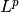

DiscreteLp¶
-
class
odl.discr.lp_discr.DiscreteLp(fspace, partition, dspace, exponent=2.0, interp='nearest', **kwargs)[source]¶ Bases:
odl.discr.discretization.DiscretizedSpaceDiscretization of a Lebesgue  space.
Attributes
axis_labelsLabels for axes when displaying space elements. cell_sidesSide lengths of a cell in an underlying uniform partition. cell_volumeCell volume of an underlying regular partition. complex_dtypeThe complex dtype corresponding to this space’s dtype.complex_spaceThe space corresponding to this space’s complex_dtype.domainDomain of the continuous space. dspaceSpace for the coefficients of the elements of this space. dspace_typeData space type of this discretization. dtypeData type of each entry. element_typeDiscreteLpElementexamplesReturn example functions in the space. exponentExponent pinL^p.fieldScalar field of numbers for this vector space. gridSampling grid of the discretization mappings. implUnderlying implmentation type for the dspace. interpInterpolation type of this discretization. interp_byaxisInterpolation by axis type of this discretization. interpolationOperator mapping an n-tuple to a uspaceelement.is_cnTrueif the space represents C^n, i.e. complex tuples.is_rnTrueif the space represents R^n, i.e. real tuples.is_uniformTrueifpartitionis uniform.is_uniform_byaxisBoolean tuple showing uniformity of self.partitionper axis.is_uniformly_weightedIf the weighting of the space is the same for all points. is_weightedTrueif thedspaceis weighted.max_ptVector of maximal coordinates of the function domain. meshgridAll sampling points in the partition as a sparse meshgrid. min_ptVector of minimal coordinates of the function domain. ndimNumber of dimensions. orderAxis ordering for array flattening. partitionRectPartitionof the domain.real_dtypeThe real dtype corresponding to this space’s dtype.real_spaceThe space corresponding to this space’s real_dtype.samplingOperator mapping a uspaceelement to an n-tuple.shapeShape of the underlying partition. sizeTotal number of underlying partition cells. tangent_bundleThe tangent bundle associated with domainusingpartition.uspaceUndiscretized/continuous space of this discretization. weightingThis space’s weighting scheme. Methods
__contains__(other)Return other in self.__eq__(other)Return self == other._dist(x, y)Return self.dist(x, y)._divide(x1, x2, out)Raw pointwise multiplication of two elements. _inner(x, y)Return self.inner(x, y)._lincomb(a, x1, b, x2, out)Raw linear combination. _multiply(x1, x2, out)Raw pointwise multiplication of two elements. _norm(x)Return self.norm(x).astype(dtype)Return a copy of this space with new dtype.available_dtypes()Available data types for this space type. contains_all(other)Test if all elements in otherare contained in this set.contains_set(other)Test if otheris a subset of this set.default_dtype([field])Return the default data type for a given field. dist(x1, x2)Return the distance between x1andx2.divide(x1, x2[, out])Return the pointwise quotient of x1andx2element([inp])Create an element from inpor from scratch.inner(x1, x2)Return the inner product of x1andx2.lincomb(a, x1[, b, x2, out])Implement out[:] = a * x1 + b * x2.multiply(x1, x2[, out])Return the pointwise product of x1andx2.norm(x)Return the norm of x.one()Return the element of all ones. points()All sampling points in the partition. zero()Return the element of all zeros.